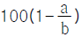
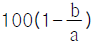
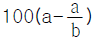
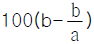
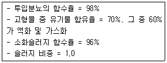
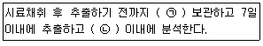
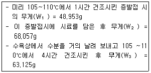
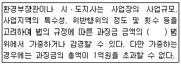
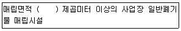
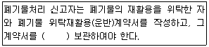

폐기물처리기사 (2019-03-03 기출문제)
1과목: 폐기물 개론
1. 적환장(transfer station)을 설치하는 일반적인 경우와 가장 거리가 먼 것은?
- 불법 투기 쓰레기들이 다량 발생할 때
- 고밀도 거주지역이 존재할 때
- 상업지역에서 폐기물 수집에 소형용기를 많이 사용할 때
- 슬러지수송이나 공기수송 방식을 사용할 때
(정답률: 84%)

2. 유해폐기물 성분물질 중 As에 의한 피해 증세로 가장 거리가 먼 것은?
- 무기력증 유발
- 피부염 유발
- Fanconi씨 증상
- 암 및 돌연변이 유발
(정답률: 79%)
3. 전과정평가(LCA)는 4부분으로 구성된다. 그 중 상품, 포장, 공정, 물질, 원료 및 활동에 의해 발생하는 에너지 및 천연원료 요구량, 대기, 수질 오염물질배출, 고형폐기물과 기타 기술적 자료구축 과정에 속하는 것은?
- scoping analysis
- inventory analysis
- impact analysis
- improvement analysis
(정답률: 79%)
4. 분뇨처리를 위한 혐기성 소화조의 운영과 통제를 위하여 사용하는 분석항목과는 직접적 관계가 없는 것은?
- 휘발성 산의 농도
- 소화가스 발생량
- 세균수
- 소화조 온도
(정답률: 79%)
5. 관로를 이용한 쓰레기의 수송에 관한 설명으로 옳지 않은 것은?
- 잘못 투입된 물건은 회수하기가 어렵다.
- 가설 후에 경로변경이 곤란하고 설치비가 높다.
- 조대쓰레기의 파쇄 등 전처리가 필요 없다.
- 쓰레기의 발생밀도가 높은 인구밀집지역에서 현실성이 있다.
(정답률: 86%)
6. 쓰레기 발생량 조사 방법이라 볼 수 없는 것은?
- 적재차량 계수분석법
- 물질 수지법
- 성상 분류법
- 직접 계근법
(정답률: 88%)
7. 분쇄기들 중 그 분쇄물의 크기가 큰 것에서부터 작아지는 순서로 옳게 나열한 것은?
- Jaw Crusher - Cone Crusher - Ball Mill
- Cone Crusher - Jaw Crusher - Ball Mill
- Ball Mill - Cone Crusher - Jaw Crusher
- Cone Crusher - Ball Mill - Jaw Crusher
(정답률: 69%)
8. 단열열량계를 이용하여 측정한 폐기물의 건량기준 고위발열량이 8000 kcal/kg 이었을 때 폐기물의 습량기준 고위발열량(kcal/kg)과 저위발열량(kcal/kg)은? (단, 폐기물의 수분함량은 20% 이고, 수분함량 외 기타 항목에 따른 수분발생은 고려하지 않음)
- 1600, 1480
- 3200, 3080
- 6400, 6280
- 7800, 7680
(정답률: 74%)
9. 수송설비를 하수도처럼 개설하여 각 가정의 쓰레기를 최종처분장까지 운반할 수 있으나, 전력비, 내구성 및 미생물의 부착 등이 문제가 되는 쓰레기 수송방법은?
- Monorail 수송
- Container 수송
- Conveyor 수송
- 철도수송
(정답률: 77%)
10. 쓰레기를 체분석하여 D10 = 0.01mm, D30 = 0.⑤mm, D60 = 0.25mm으로 결과를 얻었을 때 곡률 계수는? (단, D10, D30, D60은 쓰레기 시료의 체중량통과 백분율이 각각 10%, 30%, 60%에 해당되는 직경임)
- 0.5
- 0.85
- 1.0
- 1.25
(정답률: 81%)
11. 폐기물의 발열량 분석법으로 타당하지 않은 방법은?
- 폐기물의 원소분석 값을 이용
- 폐기물의 물리적 조성을 이용
- 열량계에 의한 방법
- 고정탄소함유량을 이용
(정답률: 66%)
12. 쓰레기 관리 체계에서 비용이 가장 많이 드는 단계는?
- 저장
- 매립
- 퇴비화
- 수거
(정답률: 81%)
13. 인력선별에 관한 설명으로 옳지 않은 것은?
- 사람의 손을 통한 수동 선별이다.
- 콘베이어 벨트의 한쪽 또는 양쪽에서 사람이 서서 선별한다.
- 기계적인 선별보다 작업량이 떨어질 수 있다.
- 선별의 정확도가 낮고 폭발가능 물질 분류가 어렵다.
(정답률: 85%)
14. 폐기물 보관을 위한 폐기물 전용 컨테이너에 관한 설명으로 옳지 않은 것은?
- 폐기물 수집 작업을 자동화와 기계화 할 수 있다.
- 언제라도 폐기물을 투입할 수 있고 주변 미관을 크게 해치지 않는다.
- 폐기물 수집차와 결합하여 운용이 가능하여 효율적이다.
- 폐기물 선별 보관, 분리수거가 어려운 단점이 있다.
(정답률: 76%)
15. 폐기물처리와 관련된 설명 중 틀린 것은?
- 지역사회 효과지수(CEI)는 청소상태 평가에 사용되는 지수이다.
- 컨테이너 철도수송은 광대한 지역에서 효율적으로 적용될 수 있는 방법이다.
- 폐기물수거 노동력을 비교하는 지표로서는 MHT(man/hrㆍton)를 주로 사용한다.
- 직접저장투하 결합방식에서 일반 부패성 폐기물은 직접 상차 투입구로 보낸다.
(정답률: 72%)
16. 쓰레기 수거노선 설정에 대한 설명으로 가장 거리가 먼 것은?
- 출발점으로 차고와 가까운 곳으로 한다.
- 언덕지역의 경우 내려가면서 수거한다.
- 발생량이 많은 곳은 하루 중 가장 나중에 수거한다.
- 될 수 있는 한 시계방향으로 수거한다.
(정답률: 88%)
17. 함수율 95%인 폐기물 10톤을 탈수공정을 통해 함수율을 각각 85% 및 75%로 감소시킨 경우, 각각 탈수 후 남은 무게(ton)는? (단, 비중 = 1.0 기준)
- 3.33, 2.00
- 3.33, 2.50
- 5.33, 3.00
- 5.33, 3.50
(정답률: 76%)
18. 한 해 동안 폐기물 수거량이 253000톤, 수거인부는 1일 850명, 수거 대상인구는 250000명이라고 할 때 1인 1일 폐기물 발생량(kg/인ㆍ일)은?
- 1.87
- 2.77
- 3.15
- 4.12
(정답률: 81%)
19. 밀도가 a인 도시쓰레기를 밀도가 b(a＜b)인 상태로 압축시킬 경우 부피감소(%)는?




(정답률: 77%)
20. 폐기물의 화학적 특성 분석에 사용되는 성분 항목이 아닌 것은?
- 탄소성분
- 수소성분
- 질소성분
- 수분성분
(정답률: 62%)
2과목: 폐기물 처리 기술
21. 다이옥신을 제어하는 촉매로 가장 비효과적인 것은?
- Al2O3
- V2O5
- TiO2
- Pd
(정답률: 72%)
22. 펄프공장의 폐수를 생물학적으로 처리한 결과 매일 500kg의 슬러지가 발생하였다. 함수율이 80%이면 건조 슬러지 중량(kg/일)은? (단, 비중 = 1.0기준)
- 50
- 100
- 200
- 400
(정답률: 78%)
23. 매립방식 중 cell 방식에 대한 내용으로 가장 거리가 먼 것은?
- 일일복토 및 침출수 처리를 통해 위생적인 매립이 가능하다.
- 쓰레기의 흩날림을 방지하며, 악취 및 해충의 발생을 방지하는 효과가 있다.
- 일일복토와 bailing을 통한 폐기물 압축으로 매립부피를 줄일 수 있다.
- cell마다 독립된 매립층이 완성되므로 화재 확산방지에 유리하다.
(정답률: 72%)
24. 사료화 기계설비의 구비요건으로 가장 거리가 먼 것은?
- 사료화의 소요시간이 길고 우수한 품질의 사료생산이 가능해야 한다.
- 오수발생, 소음 등의 2차 환경오염이 없어야 한다.
- 미생물첨가제 등 발효제의 안정적 공급과 일정시간 미생물 활성이 유지되어야 한다.
- 내부식성이 있고 소요부지가 적어야 한다.
(정답률: 75%)
25. 혐기성 소화법의 특성에 관한 설명으로 틀린 것은?
- 탈수성이 호기성에 비해 양호하다.
- 부패성 유기물을 안정화 시킨다.
- 암모니아, 인산 등 영양염류의 제거율이 높다.
- 슬러지 양을 감소시킨다.
(정답률: 59%)
26. 쓰레기의 퇴비화가 가장 빨리 형성되는 탄질비(C/N비)의 범위는? (단, 기타조건은 모두 동일)
- 25~50
- 50~80
- 80~100
- 100~150
(정답률: 75%)
27. 슬러지를 처리하기 위해 하수처리장 활성슬러지 1% 농도의 폐액 100m3을 농축조에 넣었더니 5% 농도의 슬러지로 농축되었다. 농축조에 농축되어 잇는 슬러지 양(m3)은? (단, 상징액의 농도는 고려하지 않으며, 비중 = 1.0)
- 35
- 30
- 25
- 20
(정답률: 69%)
28. 고농도 액상 폐기물의 혐기성 소화 공정 중 중온소화와 고온소화의 비교에 관한 내용으로 옳지 않은 것은?
- 부하능력은 고온소화가 우수하다.
- 탈수여액의 수질은 고온소화가 우수하다.
- 병원균의 사멸은 고온소화가 유리하다.
- 중온소화에서 미생물의 활성이 쉽다.
(정답률: 57%)
29. 토양오염 물질 중 BTEX에 포함되지 않는 것은?
- 벤젠
- 톨루엔
- 에틸렌
- 자일렌
(정답률: 82%)
30. 토양오염복원기법 중 Bioventing에 관한 설명으로 옳지 않은 것은?
- 토양 투수성은 공기를 토양 내에 강제 순환시킬 때 매우 중요한 영향인자이다.
- 오염부지 주변의 공기 및 물의 이동에 의한 오염물질의 확산의 염려가 있다.
- 현장 지반구조 및 오염물 분포에 따른 처리기간의 변동이 심하다.
- 용해도가 큰 오염물질은 많은 양이 토양수분 내에 용해상태로 존재하게 되어 처리효율이 좋아진다.
(정답률: 72%)
31. 1일 처리량이 100kL인 분뇨처리장에서 중온소화방식을 택하고자 한다. 소화 후 슬러지량(m3/day)은?

- 15
- 29
- 44
- 53
(정답률: 61%)
32. 강우량으로부터 매립지내의 지하침투량(C)을 산정하는 식으로 옳은 것은? (단, P = 총강우량, R = 유출률, S = 폐기물의 수분저장량, E = 증발량)
- C = P(1 - R) - S - E
- C = P(1 - R) + S - E
- C = P - R + S - E
- C = P - R - S - E
(정답률: 54%)
33. 유해물질별 처리가능 기술로 가장 거리가 먼 것은?
- 납 - 응집
- 비소 - 침전
- 수은 - 흡착
- 시안 - 용매추출
(정답률: 54%)
34. 토양 층위에 해당하지 않는 것은?
- O층
- B층
- R층
- D층
(정답률: 62%)
35. 바이오리액터형 매립공법의 장점이 아닌 것은?
- 침출수 재순환에 의한 염분 및 암모니아성 질소농축
- 매립지가스 회수율의 증대
- 추가 공간확보로 인한 매립지 수명연장
- 폐기물의 조기안정화
(정답률: 48%)
36. 분뇨를 1차 처리한 후 BOD 농도가 4000mg/L이었다. 이를 약 20배로 희석한 후 2차 처리를 하려 한다. 분뇨의 방류수 허용기준 이하로 처리하려면 2차 처리 공정에서 요구되는 BOD 제거 효율은? (단, 분뇨 BOD 방류수 허용기준 = 40mg/L, 기타 조건은 고려하지 않음)
- 50% 이상
- 60% 이상
- 70% 이상
- 80% 이상
(정답률: 66%)
37. 폐기물매립지에 설치되어 있는 침출수 유량조정설비의 기능 설명으로 가장 거리가 먼 것은?
- 침출수의 수질 균등화
- 호우시 또는 계절적 수량변동의 조정
- 수처리설비의 전처리 기능
- 매립지의 부등침하의 최소화
(정답률: 56%)
38. 매립지 주위의 우수를 배수하기 위한 배수관의 결정에 관한 사항으로 틀린 것은?
- 수로의 형상은 장방형 또는 사다리꼴이 좋으며 조도계수 또한 크게 하는 것이 좋다.
- 유수단면적은 토사의 혼입으로 인한 유량증가 및 여유고를 고려하여야 한다.
- 우수의 배수에 있어서 토수로의 경우는 평균유속이 3m/sec 이하가 좋다.
- 우수의 배수에 있어서 콘크리트수로의 경우는 평균유속이 8m/sec 이하가 좋다.
(정답률: 65%)
39. 안정화된 도시폐기물 매립장에서 발생되는 주요 가스성분인 메탄가스와 탄산가스에 대하여 올바르게 설명한 것은?
- 혐기성 상태가 된 매립지에서 메탄가스와 탄산가스의 무게 구성비는 50%, 50%이다.
- 탄산가스나 메탄가스 모두 공기보다 가벼워 매립지 지표면으로 상승한다.
- 탄산가스는 침출수의 산도를 높인다.
- 메탄가스는 악취성분을 가지고 있고, 일반적으로 유기성 토양으로 복토하면 대부분 제어될 수 있다.
(정답률: 62%)
40. 퇴비화에 사용되는 통기개량제의 종류별 특성으로 옳지 않은 것은?
- 볏짚 : 칼륨분이 높다.
- 톱밥 : 주성분이 분해성 유기물이기 때문에 분해가 빠르다.
- 파쇄목편 : 폐목재 내 퇴비화에 영향을 줄 수 있는 유해물질의 함유 가능성이 있다.
- 왕겨(파쇄) : 발생기간이 한정되어 있기 때문에 저류공간이 필요하다.
(정답률: 57%)
3과목: 폐기물 소각 및 열회수
41. 가스연료의 저위발열량이 15000kcal/Sm3, 이론 연소 가스량 20 Sm3/Sm3, 공기온도 20℃일 때 연료의 이론 연소온도(℃)는? (단, 연료연소가스의 평균 정압비열 = 0.75kcal/Sm3ㆍ℃, 공기는 예열되지 않으며 연소가스는 해리되지 않음)
- 720
- 880
- 920
- 1020
(정답률: 61%)
42. 소각 연소공정에서 발생하는 질소산화물(NOx)의 발생억제에 관한 설명으로 틀린 것은?
- 이단연소법은 열적 NOx 및 연료 NOx의 억제에 효과가 있다.
- 저산소 운전법으로 연소실 내 연소가스 온도를 최대한 높게 하는 것이 NOx의 억제에 효과가 있다.
- 화염온도의 저하는 열적 NOx의 억제에 효과가 있다.
- 저 NOx 버너는 열적 NOx의 억제에 효과가 있다.
(정답률: 71%)
43. 열효율이 65%인 유동층 소각로에서 15℃의 슬러지 2톤을 소각시켰다. 배기온도가 400℃ 라면 연소온도(℃)는? (단, 열효율은 배기온도 만을 고려한다.)
- 955
- 988
- 1015
- 1115
(정답률: 40%)
44. 1차 반응에서 1000초 동안 반응물의 1/2이 분해되었다면 반응물이 1/10 남을 때까지 소요되는 시간(sec)은?
- 3923
- 3623
- 3323
- 3023
(정답률: 69%)
45. 열분해 발생 가스 중 온도가 증가할수록 함량이 증가하는 것은? (단, 열분해 온도에 따른 가스 구성비(%) 기준)
- 메탄
- 일산화탄소
- 이산화탄소
- 수소
(정답률: 49%)
46. 석탄의 재성분에 다량 포함되어 있고, 재의 융점이 높은 것은?
- Fe2O3
- MgO
- Al2O3
- CaO
(정답률: 47%)
47. 유동층 소각로의 특징으로 옳지 않은 것은?
- 가스의 온도가 높고 과잉공기량이 많아 NOx 배출이 많다.
- 투입이나 유동화를 위해 파쇄가 필요하다.
- 연소효율이 높아 미연소분의 배출이 적다.
- 반응시간이 빨라 소각시간이 짧다. (로 부하율이 높다.)
(정답률: 63%)
48. H2S 의 완전연소 시 이론공기량 Ao(Sm3/Sm3)은?
- 6.14
- 7.14
- 8.14
- 9.14
(정답률: 68%)
49. 보일러 전열면을 통하여 연소가스의 여열로 보일러 급수를 예열하여 보일러 효율을 높이는 열교환장치는?
- 공기 예열기
- 절탄기
- 과열기
- 재열기
(정답률: 66%)
50. 폐기물의 건조과정에서 함수율과 표면온도의 변화에 대한 설명으로 잘못된 것은?
- 폐기물의 건조방식은 쓰레기의 허용온도, 형태, 물리적 및 화학적 성질 등에 의해 결정된다.
- 수분을 함유한 폐기물의 건조과정은 예열건조기간 → 항율건조기간 → 감율건조기간 순으로 건조가 이루어진다.
- 항율건조기간에는 건조시간에 비례하여 수분감량과 함께 건조속도가 빨라진다.
- 감율건조기간에는 고형물의 표면온도 상승 및 유입되는 열량감소로 건조속도가 느려진다.
(정답률: 49%)
51. 화격자 연소 중 상부투입 연소에 대한 설명으로 잘못된 것은?
- 공급공기는 우선 재층을 통과한다.
- 연료와 공기의 흐름이 반대이다.
- 하부투입 연소보다 높은 연소온도를 얻는다.
- 착화면 이동방향과 공기 흐름방향이 반대이다.
(정답률: 60%)
52. 착화온도에 관한 설명으로 옳지 않은 것은?
- 화학반응성이 클수록 착화온도는 낮다.
- 분자구조가 간단할수록 착화온도는 높다.
- 화학 결합의 활성도가 클수록 착화온도는 낮다.
- 화학적 발열량이 클수록 착화온도는 높다.
(정답률: 59%)
53. 소각대상물 중 함수율이 높은 폐기물을 소각시 유의할 내용이 아닌 것은?
- 가능한 연소속도를 느리게 한다.
- 함수율이 높은 폐기물의 종류에는 주방쓰레기 및 하수슬러지 등이 있다.
- 건조장치 설치 시 건조효율이 높은 기기를 선정한다.
- 폐기물의 교한, 반전, 유동 등의 조작을 겸할 수 있는 기종을 선정한다.
(정답률: 70%)
54. 소각로의 종류 중 유동층 소각로(Fluidized Bed Incinerator)를 구성하고 있는 구성인자가 아닌 것은?
- Wind Box
- 역동식 화격자
- Tuyeres
- Free Board층
(정답률: 58%)
55. 매시간 4톤의 폐유를 소각하는 소각로에서 발생하는 황산화물을 접촉산화법으로 탈황하고 부산물로 50%의 황산을 회수한다면 회수되는 부산물의 양(kg/h)은? (단, 폐유 중 황성분 = 3%, 탈황률 = 95%)
- 약 500
- 약 600
- 약 700
- 약 800
(정답률: 38%)
56. 스토카식 도시폐기물 소각로에서 유기물을 완전 연소시키기 위한 3T 조건으로 옳지 않은 것은?
- 혼합
- 체류시간
- 온도
- 압력
(정답률: 73%)
57. 소각로에서 쓰레기의 소각과 동시에 배출되는 가스성분을 분석한 결과 N2 85%, O2 6%, CO 1%와 같은 조성일 때 소각로의 공기비는?
- 1.25
- 1.32
- 1.81
- 2.28
(정답률: 53%)
58. 증기 터어빈을 증기 이용 방식에 따라 분류했을 때의 형식이 아닌 것은?
- 반동 터빈(reaction turbine)
- 복수 터빈(condensing turbine)
- 혼합 터빈(mixed pressure turbine)
- 배압 터빈(back pressure turbine)
(정답률: 50%)
59. 메탄의 고위발열량이 9000 kcal/Sm3이라면 저위발열량(kcal/Sm3)은?
- 8640
- 8440
- 8240
- 8040
(정답률: 67%)
60. 액체 주입형 연소기에 관한 설명으로 옳지 않은 것은?
- 소각재 배출설비가 있어 회분함량이 높은 액상폐기물에도 널리 사용된다.
- 구동장치가 없어서 고장이 적다.
- 고형분의 농도가 높으면 버너가 막히기 쉽다.
- 하방점화 방식의 경우에는 염이나 입상물질을 포함한 폐기물의 소각이 가능하다.
(정답률: 50%)
4과목: 폐기물 공정시험기준(방법)
61. 이온전극법으로 분석이 가능한 것은? (단, 폐기물공정시험기준 적용)
- 시안
- 비소
- 유기인
- 크롬
(정답률: 62%)
62. 용출시험방법의 용출조작을 나타낸 것으로 옳지 않은 것은?
- 혼합액을 상온, 상압에서 진탕 횟수가 매분당 약 200회 되도록 한다.
- 진폭이 7~9cm의 진탕기를 사용한다.
- 6시간 연속 진탕한 다음 1.0㎛의 유리 섬유여과지로 여과한다.
- 여과가 어려운 경우 원심분리기를 사용하여 매분당 3000회전 이상으로 20분 이상 원심분리한다.
(정답률: 71%)
63. 원자흡수분광광도법(AAS)을 이용하여 중금속을 분석할 때 중금속의 종류와 측정파장이 옳지 않은 것은?
- 크롬 - 357.9nm
- 6가 크롬 - 253.7nm
- 카드뮴 - 228.8nm
- 납 - 283.3nm
(정답률: 46%)
64. 시안(CN)을 분석하기 위한 자외선/가시선 분광법에 대한 설명으로 옳지 않은 것은?
- 클로라민-T와 피리딘-피라졸른 혼합액을 넣어 나타나는 청색을 620nm에서 측정한다.
- 정량한계는 0.01 mg/L이다.
- pH 2 이하 산성에서 피리딘ㆍ피라졸른을 넣고 가열 증류한다.
- 유출되는 시안화수소를 수산화나트륨용액으로 포집한 다음 중화한다.
(정답률: 49%)
65. 유해특성(재활용환경성평가) 중 폭발성 시험방법에 대한 설명으로 옳지 않은 것은?
- 격렬한 연소반응이 예상되는 경우에는 시료의 양을 0.5g으로 하여 시험을 수행하며, 폭발성 폐기물로 판정될 때까지 시료의 양을 0.5g씩 점진적으로 늘려준다.
- 시험결과는 게이지 압력이 690kPa에서 2070kPa까지 상승할 때 걸리는 시간과 최대 게이지 압력 2070kPa에 도달 여부로 해석한다.
- 최대 연소속도는 산화제를 무게비율로써 10 ~ 90%를 포함한 혼합물질의 연소속도 중 가장 빠른 측정값을 의미한다.
- 최대 게이지 압력이 2070kPa이거나 그 이상을 나타내는 폐기물은 폭발성 폐기물로 간주하며, 점화 실패는 폭발성이 없는 것으로 간주한다.
(정답률: 45%)
66. 유리전극법에 의한 수소이온농도 측정 시 간섭물질에 관한 설명으로 옳지 않은 것은?
- pH 10 이상에서 나트륨에 의해 오차가 발생할 수 있는데 이는 “낮은 나트륨 오차 전극”을 사용하여 줄일 수 있다.
- 유리전극은 일반적으로 용액의 색도, 탁도, 염도, 콜로이드성 물질들, 산화 및 환원성 물질들 등에 의해 간섭을 많이 받는다.
- 기름 층이나 작은 입자상이 전극을 피복하여 pH 측정을 방해할 경우에는 세척제로 닦아낸 후 정제수로 세척하고 부드러운 천으로 수분을 제거하여 사용한다.
- 피복물을 제거할 때는 염산(1+9)용액을 사용할 수 있다.
(정답률: 59%)
67. 폐기물공정시험기준에 따라 용출 시험한 결과는 함수율 85% 이상인 시료에 한하여 시료의 수분함량을 보정한다. 수분함량이 90%일 때 보정계수는?
- 0.67
- 0.9
- 1.5
- 2.0
(정답률: 62%)
68. 기체크로마토그래피로 유기인을 분석할 때 시료관리 기준으로 ( )에 옳은 것은?

- ㉠ 4℃ 냉암소에서, ㉡ 21일
- ㉠ 4℃ 냉암소에서, ㉡ 40일
- ㉠ pH 4 이하로, ㉡ 21일
- ㉠ pH 4 이하로, ㉡ 40일
(정답률: 52%)
69. 취급 또는 저장하는 동안에 기체 또는 미생물이 침입하지 않도록 내용물을 보호하는 용기는?
- 차광용기
- 밀봉용기
- 기밀용기
- 밀폐용기
(정답률: 58%)
70. 폐기물 내 납을 5회 분석한 결과 각각 1.5, 1.8, 2.0, 1.4, 1.6 mg/L를 나타내었다. 분석에 대한 정밀도(%)는? (단, 표준편차 = 0.241)
- 약 1.66
- 약 2.41
- 약 14.5
- 약 16.6
(정답률: 38%)
71. 중금속 분석의 전처리인 질산-과염소산 분해법에서 진한 질산이 공존하지 않는 상태에서 과염소산을 넣을 경우 발생되는 문제점은?
- 킬레이트형성으로 분해 효율이 저하됨
- 급격한 가열반응으로 휘산됨
- 폭발 가능성이 있음
- 중금속의 응집침전이 발생함
(정답률: 64%)
72. 휘발성 저급염소화 탄화수소류의 기체크로마토그래프법에 대한 설명으로 옳지 않은 것은?
- 검출기는 전자포획검출기 또는 전해전도검출기를 사용한다.
- 시료 중의 트리클로로에틸렌 및 테트라클로로에틸렌성분은 염산으로 추출한다.
- 운반기체는 부피백분율 99.999% 이상의 헬륨(또는 질소)을 사용한다.
- 시료 도입부 온도는 150~250℃ 범위이다.
(정답률: 46%)
73. 시료 채취를 위한 용기사용에 관한 설명으로 옳지 않은 것은?
- 시료 용기는 무색경질의 유리병 또는 폴리에틸렌병, 폴리에틸렌백을 사용한다.
- 시료 중에 다른 물질의 혼입이나 성분의 손실을 방지하기 위하여 밀봉할 수 있는 마개를 사용하며 코르크 마개를 사용하여서는 안 된다. 다만 고무나 코르크마개에 파라핀지, 유지 또는 셀로판지를 씌워 사용할 수도 있다.
- 휘발성 저급 염소화 탄화수소류 실험을 위한 시료의 채취 시에는 폴리에틸렌병을 사용하여야 한다.
- 시료 용기는 시료를 변질시키거나 흡착하지 않는 것이어야 하며 기밀하고 누수나 흡습성이 없어야 한다.
(정답률: 60%)
74. 액상폐기물에서 유기인을 추출하고자 하는 경우 가장 적합한 추출용매는?
- 아세톤
- 노말헥산
- 클로로포름
- 아세토니트릴
(정답률: 69%)
75. 수산화나트륨(NaOH) 40%(무게 기준) 용액을 조제한 후 100mL를 취하여 다시 물에 녹여 2000mL로 하였을 때 수산화나트륨의 농도(N)는? (단, Na 원자량 = 23)
- 0.1
- 0.5
- 1
- 2
(정답률: 44%)
76. 폐기물 중에 포함된 수분과 고형물을 정량하여 다음과 같은 결과를 얻었을 때 수분함량(%)과 고형물 함량(%)은? (단, 수분함량-고형물함량 순서)

- 25.82, 74.18
- 74.18, 25.82
- 34.80, 65.20
- 65.20, 34.80
(정답률: 55%)
77. pH 표준용액 조제에 대한 설명으로 옳지 않은 것은?
- 염기성 표준용액은 산화칼슘(생석회) 흡수관을 부착하여 2개월 이내에 사용한다.
- 조제한 pH 표준용액은 경질유리병에 보관한다.
- 산성표준용액은 3개월 이내에 사용한다.
- 조제한 pH 표준용액은 폴리에틸렌병에 보관한다.
(정답률: 44%)
78. 5톤 이상의 차량에서 적재폐기물의 시료를 채취할 때 평면상에서 몇 등분하여 채취하는가?
- 3등분
- 5등분
- 6등분
- 9등분
(정답률: 61%)
79. 수질오염공정시험기준 총칙에서 규정하고 있는 사항 중 옳은 것은?
- '약'이라 함은 기재된 양에 대하여 ±5% 이상의 차이가 있어서는 안 된다.
- '감압 또는 진공'이라 함은 따로 규정이 없는 한 15mmH2O 이하를 말한다.
- 무게를 '정확히 단다'라 함은 규정된 수치의 무게를 0.1mg까지 다는 것을 말한다.
- '정확히 취하여'라 함은 규정한 양의 검체 또는 시액을 뷰렛으로 취하는 것을 말한다.
(정답률: 57%)
80. 자외선/가시선 분광법으로 비소를 측정할 때 비화수소를 발생시키기 위해 시료 중의 비소를 3가비소로 환원한 다음 넣어주는 시약은?
- 아연
- 이염화주석
- 염화제일주석
- 시안화칼륨
(정답률: 49%)
5과목: 폐기물 관계 법규
81. 폐기물관리법에서 사용하는 용어 설명으로 잘못된 것은?
- “지정폐기물”이란 사업장폐기물 중 폐유ㆍ폐산 등 주변 환경을 오염시킬 수 있거나 유해폐기물 등 인체에 위해를 줄 수 있는 해로운 물질로서 환경부령으로 정하는 폐기물을 말한다.
- “의료폐기물”이란 보건ㆍ의료기관, 동물병원, 시험ㆍ검사기관 등에서 배출되는 폐기물 중 인체에 감염 등 위해를 줄 우려가 있는 폐기물과 인체 조직 등 적출(摘出物), 실험 동물의 사체 등 보건ㆍ환경보호상 특별한 관리가 필요하다고 인정되는 폐기물로서 대통령령으로 정하는 폐기물을 말한다.
- “처리”란 폐기물의 수집, 운반, 보관, 재활용, 처분을 말한다.
- “처분”이란 폐기물의 소각ㆍ중화ㆍ파쇄ㆍ고형화 등의 중간처분과 매립하거나 해역으로 배출하는 등의 최종처분을 말한다.
(정답률: 58%)
82. 폐기물처리업에 대한 과징금에 관한 내용으로 ( )에 옳은 내용은?

- 2분의 1
- 3분의 1
- 4분이 1
- 5분의 1
(정답률: 51%)
83. 폐기물 수집, 운반업의 변경허가를 받아야 할 중요사항으로 틀린 것은?
- 수집ㆍ운반대상 폐기물의 변경
- 영업구역의 변경
- 처분시설 소재지의 변경
- 운반차량(임시차량은 제외한다)의 증차
(정답률: 50%)
84. 폐기물 감량화시설의 종류로 틀린 것은?
- 폐기물 자원화시설
- 폐기물 재이용시설
- 폐기물 재활용시설
- 공정 개선시설
(정답률: 44%)
85. 폐기물을 매립하는 시설 중 사후관리이행보증금의 사전적립대상인 시설의 면적기준은?
- 3000m2 이상
- 3300m2 이상
- 3600m2 이상
- 3900m2 이상
(정답률: 69%)
86. 특별자치시장, 특별자치도지사, 시장ㆍ군수ㆍ구청장이 관할 구역의 음식물류 폐기물의 발생을 최대한 줄이고 발생한 음식물류 폐기물을 적절하게 처리하기 위하여 수립하는 음식물류 폐기물발생 억제계획에 포함되어야 하는 사항으로 틀린 것은?
- 음식물류 폐기물 처리기술의 개발 계획
- 음식물류 폐기물의 발생 억제 목표 및 목표 달성 방안
- 음식물류 폐기물의 발생 및 처리 현황
- 음식물류 폐기물 처리시설의 설치 현황 및 향후 설치 계획
(정답률: 55%)
87. 주변지역 영향 조사대상 폐기물처리시설(폐기물 처리업자가 설치, 운영하는 시설)기준으로 ( )에 알맞은 것은?

- 3만
- 5만
- 10만
- 15만
(정답률: 59%)
88. 토지 이용의 제한기간은 폐기물매립시설의 사용이 종료되거나 그 시설이 폐쇄된 날부터 몇 년 이내로 하는가?
- 15년
- 20년
- 25년
- 30년
(정답률: 59%)
89. 환경부장관 또는 시ㆍ도지사가 폐기물처리 공제조합에 방치 폐기물의 처리를 명할 때에는 처리량과 처리기간에 대하여 대통령령으로 정하는 범위 안에서 할 수 있도록 명하여야 한다. 이와 같이 폐기물처리 공제조합에 처리를 명할 수 있는 방치폐기물의 처리량에 대한 기준으로 옳은 것은? (단, 폐기물처리업자가 방치한 폐기물의 경우)(오류 신고가 접수된 문제입니다. 반드시 정답과 해설을 확인하시기 바랍니다.)
- 그 폐기물처리업자의 폐기물 허용보관량의 1.5배 이내
- 그 폐기물처리업자의 폐기물 허용보관량의 2.0배 이내
- 그 폐기물처리업자의 폐기물 허용보관량의 2.5배 이내
- 그 폐기물처리업자의 폐기물 허용보관량의 3.0배 이내
(정답률: 63%)
90. 폐기물매립시설의 사후관리계획서에 포함되어야 할 내용으로 틀린 것은?
- 토양조사계획
- 지하수 수질조사계획
- 빗물배제계획
- 구조물 및 지반 등의 안정도유지계획
(정답률: 38%)
91. 3년 이하의 징역이나 3천만원 이하의 벌금에 해당하는 벌칙기준에 해당하지 않는 것은?
- 고의로 사실과 다른 내용의 폐기물분석결과서를 발급한 폐기물분석전문기관
- 승인을 받지 아니하고 폐기물처리시설을 설치한 자
- 다른 사람에게 자기의 성명이나 상호를 사용하여 폐기물을 처리하게 하거나 그 허가증을 다른 사람에게 빌려준 자
- 폐기물처리시설의 설치 또는 유지ㆍ관리가 기준에 맞지 아니하여 지시된 개선명령을 이행하지 아니하거나 사용중지 명령을 위반한 자
(정답률: 38%)
92. 영업정지 기간에 영업을 한 자에 대한 벌칙기준은?
- 1년 이하의 징역이나 1천만원 이하의 벌금
- 2년 이하의 징역이나 2천만원 이하의 벌금
- 3년 이하의 징역이나 3천만원 이하의 벌금
- 5년 이하의 징역이나 5천만원 이하의 벌금
(정답률: 34%)
93. 음식물류 폐기물 배출자는 음식물류 폐기물의 발생억제 및 처리계획을 환경부령으로 정하는 바에 따라 특별자치시장, 특별자치도지사, 시장ㆍ군수ㆍ구청장에게 신고하여야 한다. 이를 위반하여 음식물류 폐기물의 발생억제 및 처리계획을 신고하지 아니한 자에 대한 과태료 부과 기준은?
- 100만원 이하
- 300만원 이하
- 500만원 이하
- 1000만원 이하
(정답률: 49%)
94. 폐기물처리시설 설치ㆍ운영자, 폐기물처리업자, 폐기물과 관련된 단체, 그 밖에 폐기물과 관련된 업무에 종사하는 자가 폐기물에 관한 조사연구ㆍ기술개발ㆍ정보보급 등 폐기물분야의 발전을 도모하기 위하여 환경부장관의 허가를 받아 설립할 수 있는 단체는?
- 한국폐기물협회
- 한국폐기물학회
- 폐기물관리공단
- 폐기물처리공제조합
(정답률: 60%)
95. 폐기물처리시설의 사후관리이행보증금은 사후관리기간에 드는 비용을 합산하여 산출한다. 산출시 합산되는 비용과 가장 거리가 먼 것은? (단, 차단형 매립시설은 제외)
- 지하수정 유지 및 지하수 오염처리에 드는 비용
- 매립시설 제방, 매립가스 처리시설, 지하수 검사정 등의 유지ㆍ관리에 드는 비용
- 매립시설 주변의 환경오염조사에 드는 비용
- 침출수처리시설의 가동과 유지ㆍ관리에 드는 비용
(정답률: 33%)
96. 폐기물처리 신고자의 준수사항에 관한 내용으로 ( )에 알맞은 것은?

- 1년간
- 2년간
- 3년간
- 5년간
(정답률: 56%)
97. 재활용 활동 중에는 폐기물(지정폐기물제외)을 시멘트 소성로 및 환경부장관이 정하여 고시하는 시설에서 연료로 사용하는 활동이 있다. 이 시멘트 소성로 및 환경부장관이 정하여 고시하는 시설에서 연료로 사용하는 폐기물(지정폐기물 제외)이 아닌 것은? (단, 그 밖에 환경부장관이 고시하는 폐기물 제외)
- 폐타이어
- 폐유
- 폐섬유
- 폐합성고무
(정답률: 53%)
98. 기술관리인을 두어야 할 폐기물처리시설 기준으로 옳은 것은? (단, 폐기물처리업자가 운영하는 폐기물처리시설은 제외)
- 시멘트 소성로로서 시간당 처분능력이 600킬로그램 이상인 시설
- 멸균분쇄시설로서 시간당 처분능력이 600킬로그램 이상인 시설
- 사료화ㆍ퇴비화 또는 연료화시설로서 1일 재활용능력이 1톤 이상인 시설
- 압축ㆍ파쇄ㆍ분쇄 또는 절단시설로서 1일 처분능력 또는 재활용능력이 100톤 이상인 시설
(정답률: 47%)
99. 폐기물처리업의 업종 구분에 따른 영업 내용으로 틀린 것은?
- 폐기물 종합처분업 : 폐기물 최종처분시설을 갖추고 폐기물을 매립 등의 방법으로 최종처분하는 영업
- 폐기물 중간재활용업 : 폐기물 재활용시설을 갖추고 중간가공 폐기물을 만드는 영업
- 폐기물 최종재활용업 : 폐기물 재활용시설을 갖추고 중간가공 폐기물을 폐기물의 재활용 원칙 및 준수사항에 따라 재활용하는 영업
- 폐기물 종합재활용업 : 폐기물 재활용시설을 갖추고 중간재활용업과 최종재활용업을 함께하는 영업
(정답률: 49%)
100. 폐기물처리시설의 사후관리이행보증금과 사전적립금의 용도로 가장 적합한 것은?
- 매립시설의 사후 주변경관조성 비용
- 폐기물처리시설 설치비용의 지원
- 사후관리이행보증금과 매립시설의 사후관리를 위한 사전적립금의 환불
- 매립시설에서 발생하는 침출수처리시설 비용
(정답률: 57%)